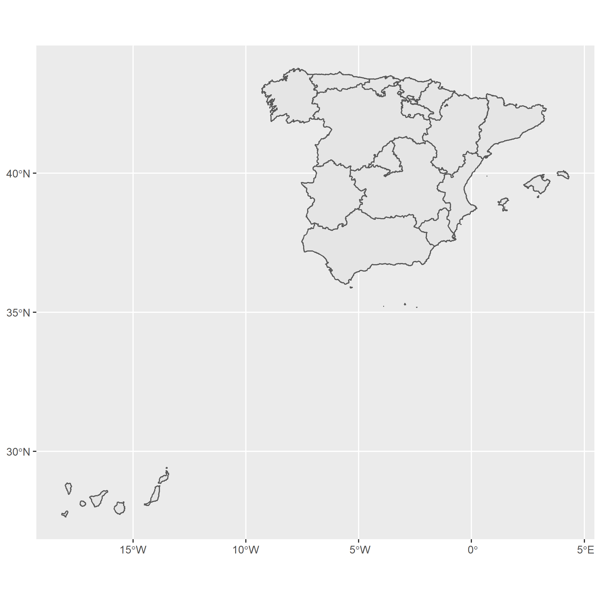
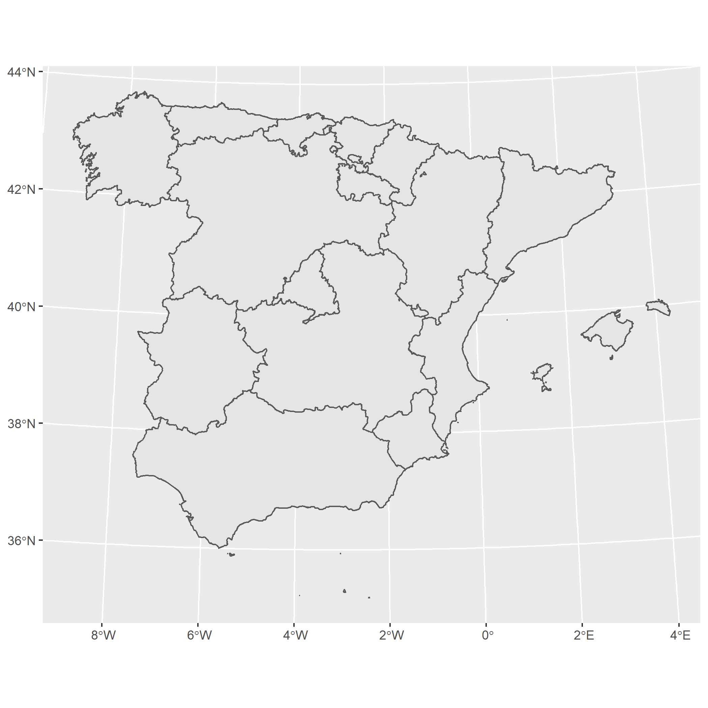
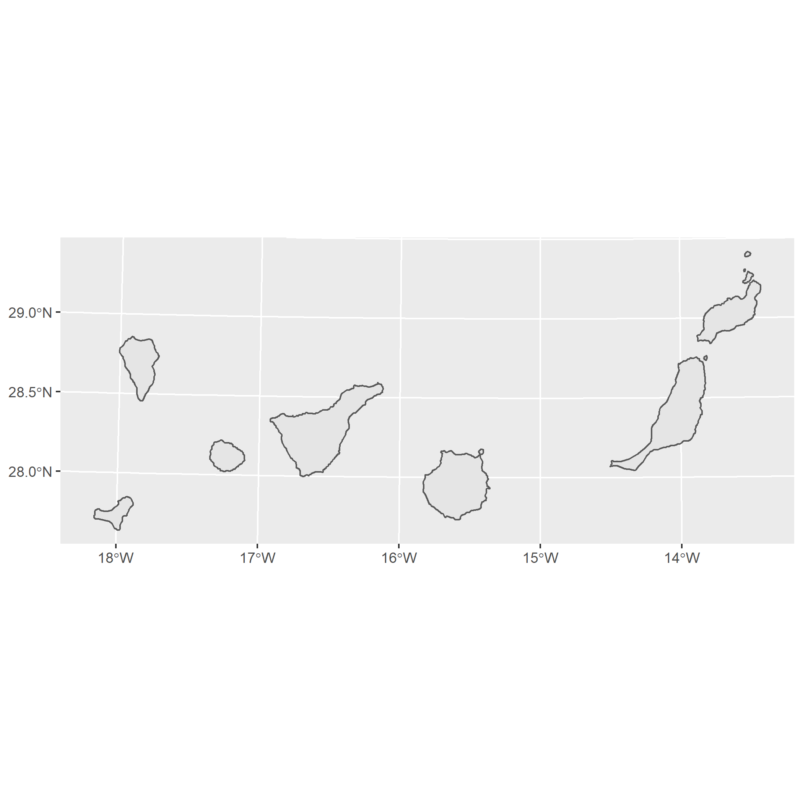
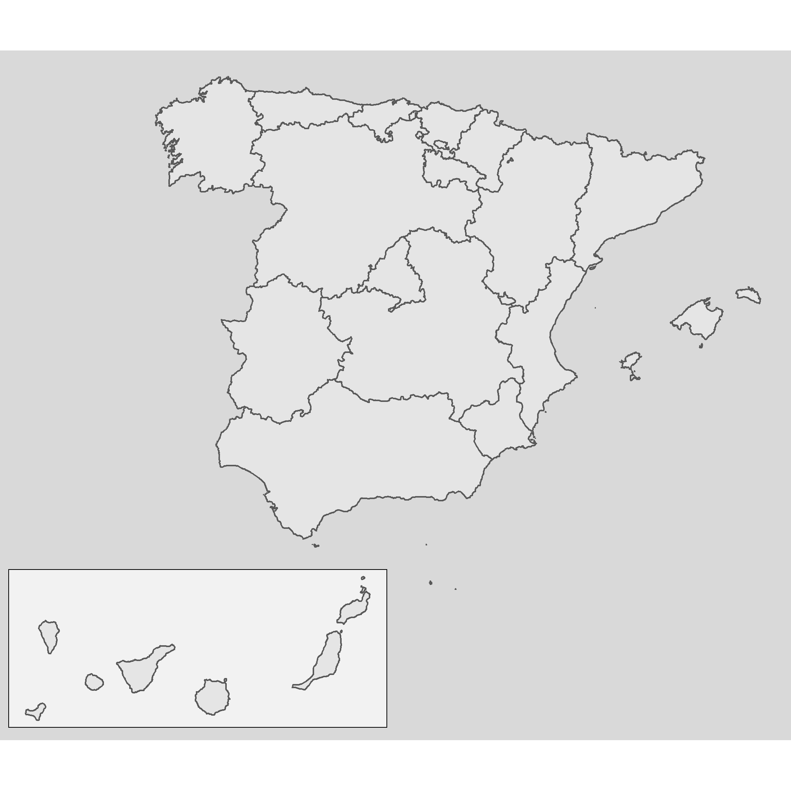
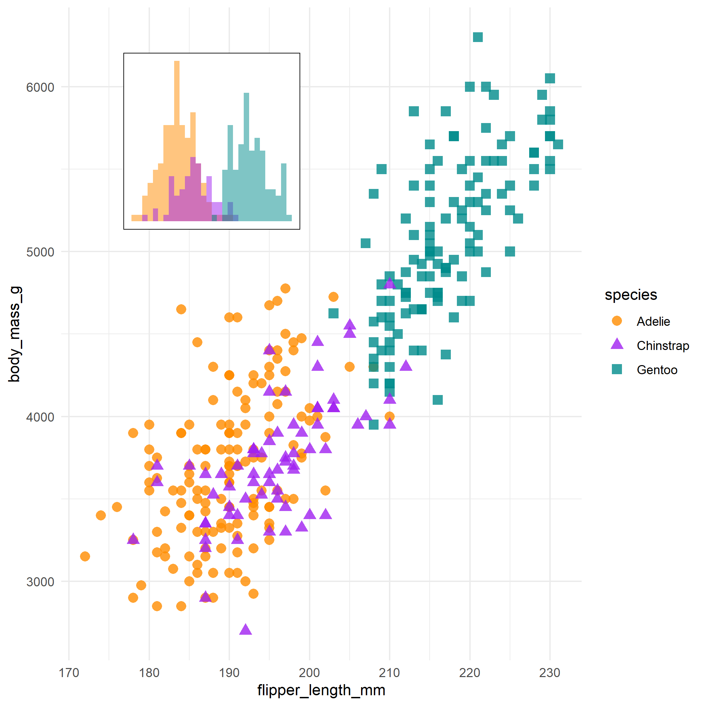
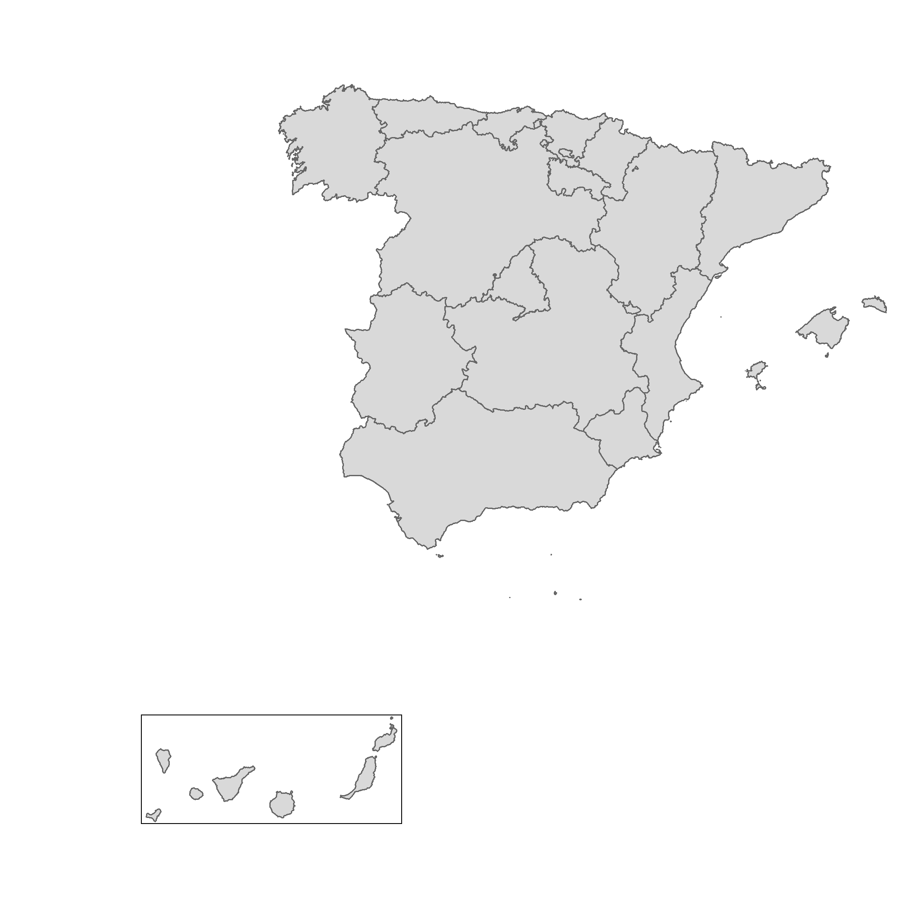
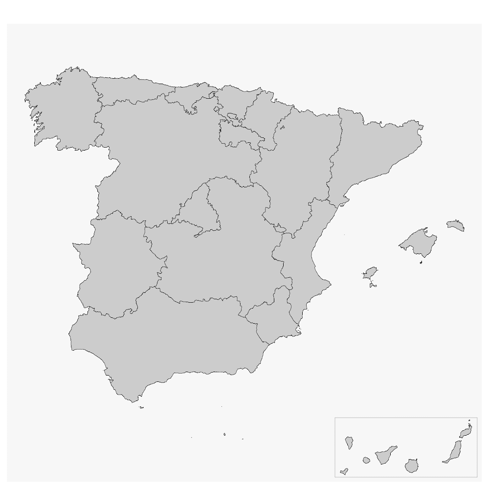

This post is dedicated to Dominic Royé, AKA \@dr_xeo
A common challenge when creating maps is how to include an inset map on your visualization. An inset map is nothing more than a smaller map usually included on a corner that may provide additional context to the overall map. It is also useful for representing spatial units that may form part of a country but its geographical location would imply an imperfect visualization, or even to include small units that otherwise won’t be shown on the map.
I have already covered this using the base plot()
function, but this time I would
show how to produce these insets using the ggplot2 and the tmap packages. In
short: use cowplot package.
Test case: Canary Island as an inset
On this example, I would create a map of Spain using mapSpain and creating an
inset for the Canary Islands.
The “true” map of Spain is:
library(mapSpain)
library(sf)
library(ggplot2)
library(dplyr)
regions <- esp_get_ccaa(moveCAN = FALSE)
ggplot(regions) +
geom_sf()

I would use a different CRS for each part of Spain. In the case of mainland Spain I would use ETRS89 / UTM 30N (EPSG:25830) and for the Canary Islands I would use REGCAN95 / UTM 28N (EPSG:4083)
main <- regions %>%
filter(ccaa.shortname.es != "Canarias") %>%
st_transform(25830)
ggplot(main) +
geom_sf()

island <- regions %>%
filter(ccaa.shortname.es == "Canarias") %>%
st_transform(4083)
ggplot(island) +
geom_sf()

So that was easy! Just a couple of maps using ggplot2. Let’s start mixing and
matching!
On ggplot2
We have already created two quick maps on ggplot2. Now, to produce our map
with insets we would:
-
Produce two plots: The main plot and the sub plot providing a minimal style. We would store them as
ggplot2objects. -
We would combine both objects with
cowplot.
# Main plot
main_gg <- ggplot(main) +
geom_sf() +
theme_void() +
theme(
plot.background = element_rect(fill = "grey85", colour = NA),
# Add a bit of margin on the bottom left
# We would place the inset there
plot.margin = margin(l = 80, b = 80)
)
# Sub plot
sub_gg <- ggplot(island) +
geom_sf() +
theme_void() +
# Add a border to the inset
theme(
panel.border = element_rect(fill = NA, colour = "black"),
plot.background = element_rect(fill = "grey95")
)
We have our objects in place, and now is when the magic happens! With cowplot
we can combine both maps on a single one. You may need to play a bit with the
parameters x, y hjust and vjust of the sub plot to improve the
placement:
library(cowplot)
ggdraw() +
draw_plot(main_gg) +
draw_plot(sub_gg,
height = 0.2,
x = -0.25,
y = 0.08
)

Note also that this approach is valid not only for maps, but for all type of
plot produced by ggplot2, since this package is not specific for map objects:
# Combining non-spatial plots
library(palmerpenguins)
mass_flipper <- ggplot(
data = penguins,
aes(
x = flipper_length_mm,
y = body_mass_g
)
) +
geom_point(aes(
color = species,
shape = species
),
size = 3,
alpha = 0.8
) +
theme_minimal() +
scale_color_manual(values = c("darkorange", "purple", "cyan4"))
flipper_hist <- ggplot(data = penguins, aes(x = flipper_length_mm)) +
geom_histogram(aes(fill = species),
alpha = 0.5,
position = "identity",
show.legend = FALSE
) +
scale_fill_manual(values = c("darkorange", "purple", "cyan4")) +
theme_void() +
theme(plot.background = element_rect(fill = "white"))
# Non-sense plot!
ggdraw() +
draw_plot(mass_flipper) +
draw_plot(flipper_hist,
scale = 0.25,
y = 0.3,
x = -0.2
)

On tmap
We can follow a similar approach on tmap. On versions v3.x.x (there is a new
revamped version on development) we
can use tmap_grob() to convert
the tmap objects to the objects that cowplot can handle.
library(tmap)
main_tmap <- tm_shape(main) +
tm_polygons() +
tm_layout(
inner.margins = c(.3, .3, 0, 0),
frame = FALSE
)
main_tmap <- tmap_grob(main_tmap)
sub_tmap <- tm_shape(island) +
tm_polygons()
sub_tmap <- tmap_grob(sub_tmap)
Once that we have these new “grobs”, we can use the same approach than we
applied to ggplot2 objects.
ggdraw() +
draw_plot(main_tmap) +
draw_plot(sub_tmap,
height = 0.3,
x = -0.2
)

Update: On mapsf
Timotheé Giraud (AKA
\@rgeomatic), the developer of mapsf, shared
also how to create inset maps using that package:
library(mapsf)
mf_map(main)
mf_inset_on(island, pos = "bottomright", cex = .3)
mf_map(island)
box(lwd = .5)
mf_inset_off()
